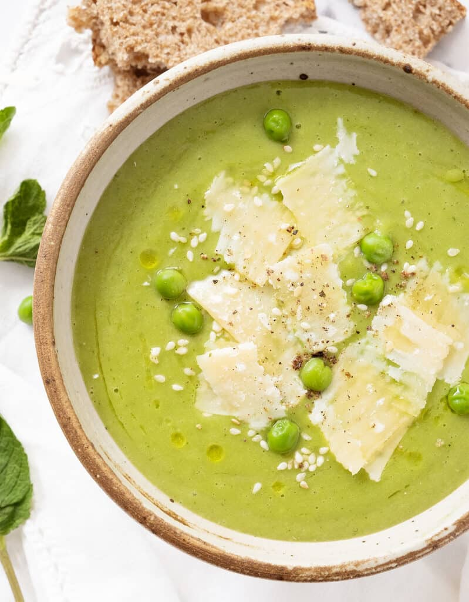

Creamy Pea Soup

An easy peasy soup with a hint of mint
If you’re not a big pea fan, or you find them too sweet, you’ve got to try this pea soup: it’s delicious all
year round, filling, and it comes together in no time!
All you have to do is saute’ the onion, then add potatoes, broth and cook. Then add peas, mint leaves, and
seasoning. Cook, blend, and enjoy.
Serve for lunch or a starter with crusty no-knead panini bread or warm Italian focaccia to make a delicious meal
on a budget. Then garnish with shaved parmesan or crumbled feta if you don’t keep it vegan, and enjoy.
Ingredients
- 1 medium onion, sliced
- 2 (300 grams) medium potatoes, diced
- 750ml vegetable broth
- 600 grams frozen peas
- 15ml olive oil
- Fine salt
- 1-2 Tbs fresh mint leaves
- Black pepper, to serve
Garnish (optional)
- 3 Tbsp cooked peas
- Extra virgin olive oil, drizzled
- Shaved parmesan cheese or crumbled feta
- Sesame seeds or other seeds of your choice
Directions
- Heat the olive oil in a large pot over medium heat. Add the onion and saute' for about 5 minutes until
soft and translucent.
- Add the potatoes and the vegetable broth, bring to the boil, reduce the heat, cover with a lid and cook
for 10 minutes, or until the potatoes are soft.
- Then add the peas and simmer for a further 5 minutes (no longer, or you will lose the fresh flavour and
beautiful colour of the peas).
- Turn off the heat, season with salt, pepper, add the fresh mint leaves, and let it cool for a few
minutes.
- Then, carefully transfer the hot soup to a blender, working in batches if necessary. (Do not fill past
the maximum fill line or the soup could overflow!). If the soup is too thick for you, you can add some
broth or water to thin it out until you have a consistency you like.
- Taste, make sure you're happy with the seasoning, and serve with black pepper, a
drizzle of extra virgin
olive oil and some parmesan cheese or crumbled feta if you wish.
Back to Recipeas